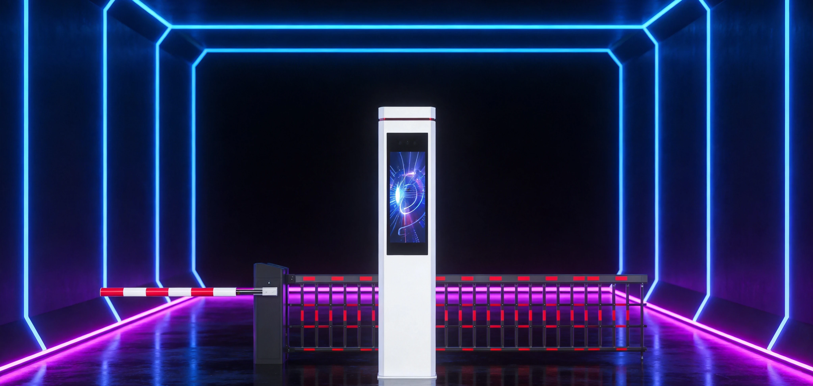
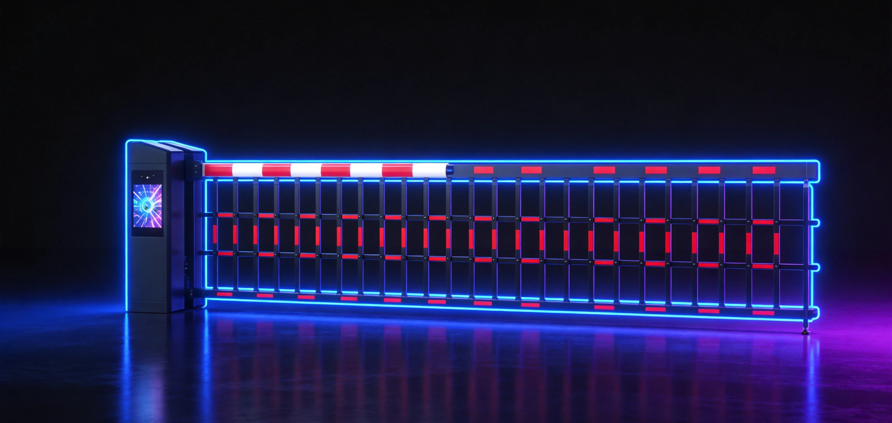
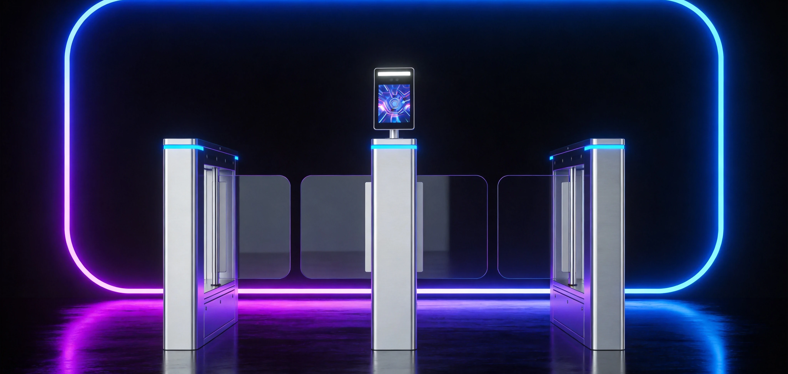
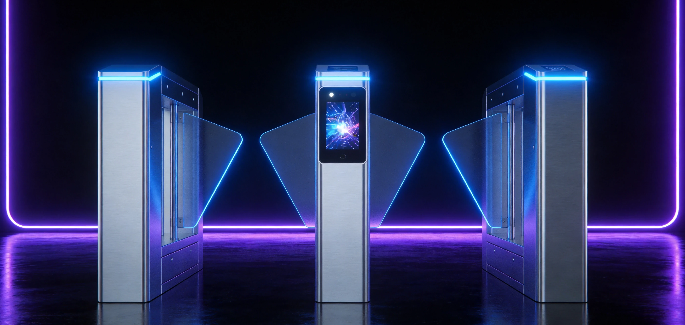
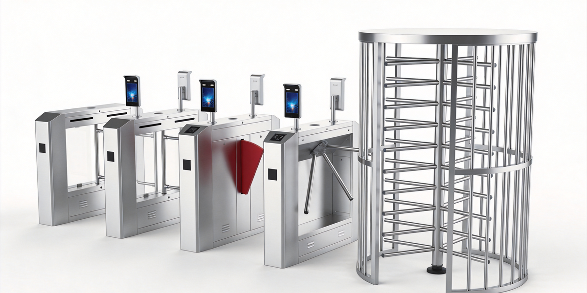

AXLTeco 提供三辊闸、摆闸、翼闸、全高转闸等人行通道闸机，支持人脸识别、指纹、IC卡、二维码多种验证方式，可与考勤门禁系统联动，实现人员出入精确管控与实时计数，适用于地铁、写字楼、工厂、景区等高流量场景。
人脸识别快速通行
与门禁终端联动，0.3秒人脸验证开闸，防止代打卡。
高流量通行设计
翼闸通行速度30–40人/分钟，摆闸25–35人/分钟，满足高峰人流。
防尾随防逆行
红外对射检测，自动报警并关闭闸门，杜绝无权限尾随。
多验证方式
人脸/指纹/IC卡/二维码/NFC，支持组合验证提升安全性。
实时出入计数
双向进出计数，数据实时上传管理平台，支持报表导出。
防夹防撞设计
翼闸遇阻自动回弹，摆闸摆臂可外力推开，紧急断电自动开闸。
型号选型
人行通道闸机涵盖多种类别与型号，满足不同场景与预算需求。

三辊闸
- 金属三杆设计
- 单向/双向通行
- 防尾随
- 工厂/工地/景区经济型适用

摆闸
- 摆臂可推设计
- 通道宽550–1200mm
- 轮椅/行李通行
- 适用于写字楼/酒店

翼闸
- 亚克力翼门
- 通行速度30–40人/分钟
- 高端外观
- 地铁/机场/高端楼宇

全高转闸
- 全高十字转门
- 120°/90°旋转
- 最高安全级别
- 监狱/工厂/高安全区

选型速览
| 场景 | 推荐形态 | 识别方式 | 关键特性 |
|---|---|---|---|
| 工厂/工地 | 三辊闸 | IC卡/指纹 | 经济耐用、防尾随 |
| 写字楼/酒店 | 摆闸 | 人脸+IC卡 | 通道宽、外观现代 |
| 地铁/机场 | 翼闸 | 人脸+二维码 | 通行快、形象高端 |
| 高安全区域 | 全高转闸 | 人脸+指纹+卡 | 最高安全级别 |
接口与兼容
人行通道闸机支持丰富的物理接口与网络协议，兼容主流平台与第三方系统。
物理接口
- RJ45 10/100M 网口
- RS-485
- Wiegand In/Out
- 继电器输出
- 报警输入/输出
通信协议
- TCP/IP
- HTTP/HTTPS
- ONVIF
- SDK
- MQTT
兼容平台
- ZKBioAccess 门禁平台
- ZKBioTime 考勤平台
- iVMS-4200
- 第三方平台
联动能力
- 与门禁终端联动
- 与考勤系统同步
- 消防联动自动开闸
- 访客系统联动
应用方案
人行通道闸机可与AXLTeco软件系统与行业解决方案深度集成，发挥协同价值。
优势与保障
多种闸机形态
提供三辊闸、翼闸、摆闸、速通门等多种形态，适配写字楼、工厂、景区、地铁站等不同场景。
高通行效率
闸机响应速度快，支持高频次连续通行，高峰时段人流疏导高效有序。
多重安全防护
红外防夹、机械防夹、遇阻反弹等多重安全机制，行人通行安全有保障。
身份识别集成
集成人脸识别、刷卡、二维码、指纹等多种识别模块，与门禁考勤系统无缝对接。
恶劣环境耐用
不锈钢机身，IP54 防护等级，耐高低温、防雨防潮，在非洲户外环境下长期稳定运行。
灵活通行模式
支持单向通行、双向通行、常开、常闭等多种模式，按场景需求灵活配置。
现场勘察
实地勘察通道宽度、人流量与安装条件，输出闸机选型与布线方案。
安装调试
专业工程师完成闸机安装、识别模块调试、通行规则配置与系统联调。
培训交付
培训管理员与安保人员，覆盖通行规则配置、异常处理、报表查询与日常维护。
质保承诺
设备质保一年，机芯与控制板核心部件延保可选，质保期内免费维修或更换。
本地响应
在尼日利亚等地设有本地服务团队，提供技术支持、备件供应与现场维护服务。
远程运维
7×24 小时远程技术支持，设备状态实时监控，故障主动预警与远程诊断。